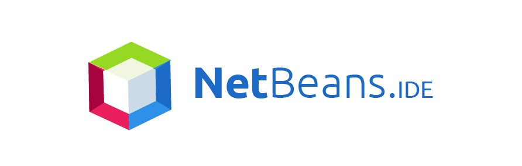

Visão geral

A IDE NetBeans auxilia programadores a escrever, compilar, debugar e instalar aplicações, e foi arquitetada em forma de uma estrutura reutilizável que visa simplificar o desenvolvimento e aumentar a produtividade, pois reúne em uma única aplicação todas estas funcionalidades. Totalmente escrita em Java,
mas que pode suportar qualquer outra linguagem de programação que desenvolva com Swing, como C, C++, Ruby e PHP. Também suporta linguagens de marcação como XML e HTML.
O NetBeans fornece uma base sólida para a criação de projetos e módulos, possui um grande conjunto de bibliotecas, módulos e APIs (Application Program Interface, um conjunto de rotinas, protocolos e ferramentas para a construção de aplicativos de software) além de uma documentação vasta — inclusive em português — bem organizada. Tais recursos auxiliam o desenvolvedor a escrever seu software de maneira mais rápida. A distribuição da ferramenta é realizada sob as condições da SPL (Sun Public License), uma variação da MPL (Mozilla Public License).
Esta licença tem como objetivo garantir a redistribuição de conhecimento à comunidade de desenvolvedores quando novas funcionalidades forem incorporadas à ferramenta.
Atualmente está distribuído em diversos idiomas e isto tem o tornado cada vez mais popular, facilitando o acesso a iniciantes em programação e possibilitado o desenvolvimento de aplicativos multilíngue.
Como o NetBeans é escrito em Java, é independente de plataforma, funciona em qualquer sistema operacional que suporte a máquina virtual Java (JVM).
Alguns dos seus principais recursos são:
- editor de código fonte integrado, rico em recursos para aplicações Web (Servlets e JSP, JSTL, EJBs) e aplicações visuais com Swing que é uma API (Interface de Programação de Aplicativos) Java para interfaces gráficas. A API Swing procura desenhar por contra própria todos os componentes, ao invés de delegar essa tarefa ao sistema operacional,
como a maioria das outras APIs de interface gráfica trabalham;
- visualizador de classes integrado ao de interfaces, que gera automaticamente o código dos componentes de forma bem organizada, facilitando assim o entendimento de programadores iniciantes;
- suporte ao Java Enterprise Edition, plataforma de programação de computadores que faz parte da plataforma Java voltada para aplicações multicamadas, baseadas em componentes que são executados em um servidor de aplicações;
- plugins para UML, Unified Modeling Language, linguagem de modelagem não proprietária de terceira geração, e desenvolvimento remoto em equipes; interface amigável com CVS ou Concurrent Version System (Sistema de Versões Concorrentes) é um sistema de controle de versão que permite que se trabalhe com diversas versões de arquivos organizados em um diretório e localizados local ou remotamente,
mantendo-se suas versões antigas e os logs de quem e quando manipulou os arquivos;
- CSS, algumas funcionalidades para editar folhas de estilos como destaques, recursos de autocompletar, análise de código;
- help local e on-line; debug apurado de aplicações e componentes;
- autocompletar avançado; total suporte ao ANT, ferramenta de automatização da construção de programas e TOMCAT, servidor de aplicações Java para web;
- autocompletar avançado; total suporte ao ANT, ferramenta de automatização da construção de programas e TOMCAT, servidor de aplicações Java para web;
- suporte a Database (banco de dados), Data view e Connection wizard que são os módulos embutidos na IDE; geração de Javadoc: a ferramente permite a geração automática de arquivos javadoc em HTML a partir dos comentários inseridos no código, além de recursos que facilitam a inclusão de comentários no código.
- atalhos para copiar linhas inteiras de código.